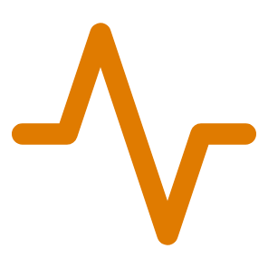
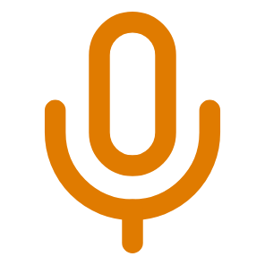
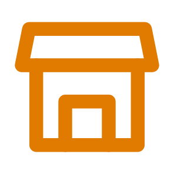

Visitatie
januari 2021

Kwaliteitsverschil
Gezondheid, deeltijd
november 2021
Van rubriek naar cijfer
Lerarenopleiding Nederlands
april 2024

Wijze en omvang
Journalistiek
november 2024

Toelichting leeg
Ondernemerschap & Retail
“De narratieve feedback is niet altijd helemaal passend bij de rubric.”
Visitatierapporten NQA en Hobéon. Citaat: NQA, Ad E-commerce, november 2024, p. 24.

5